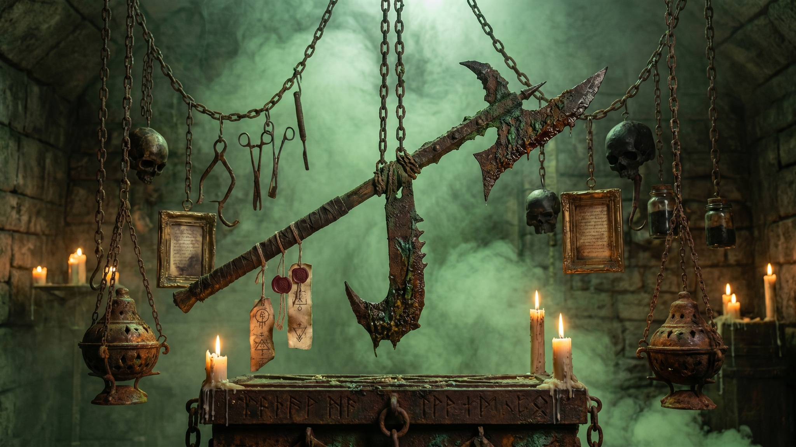
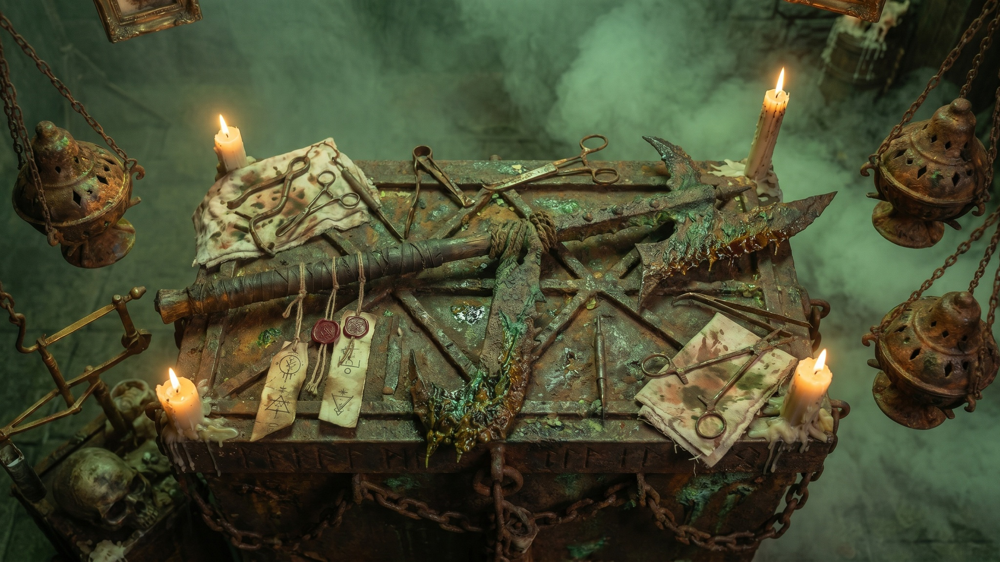
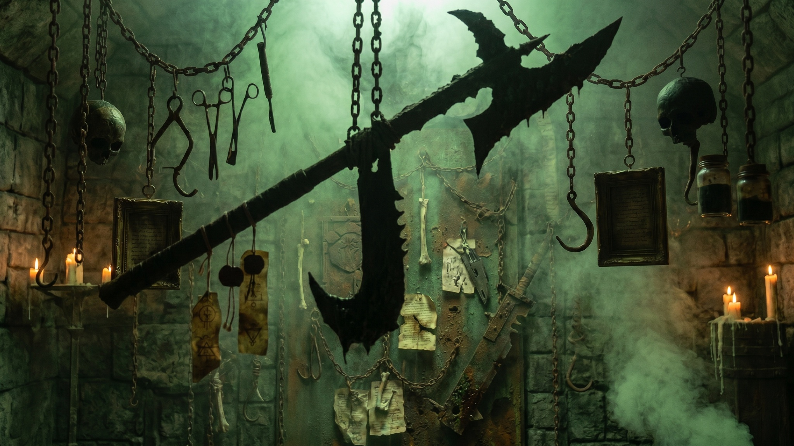
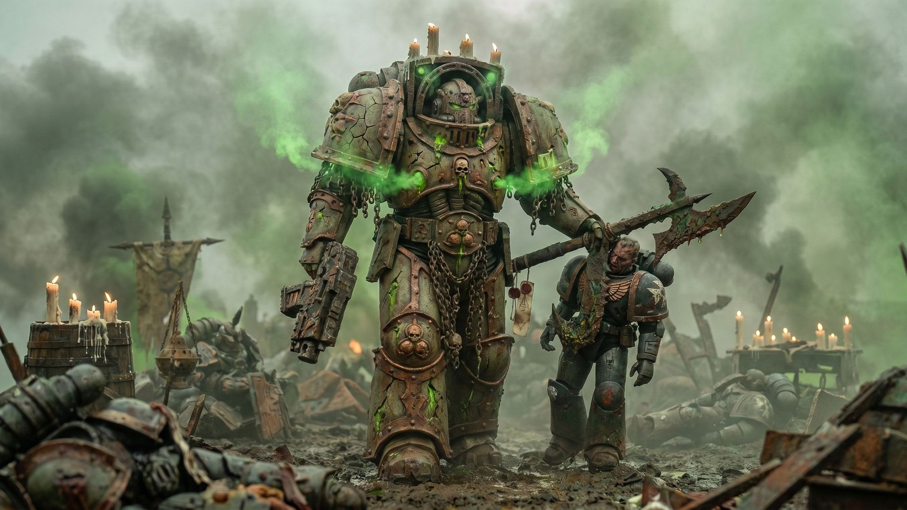
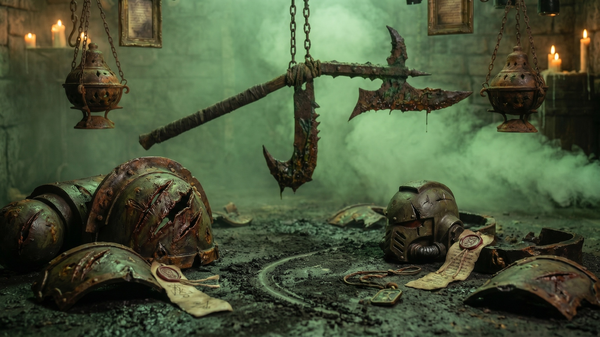
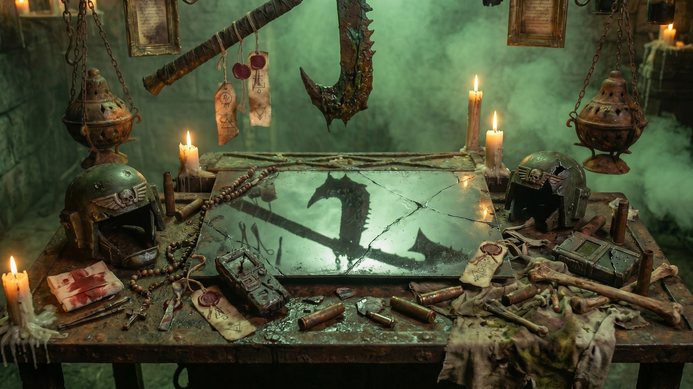
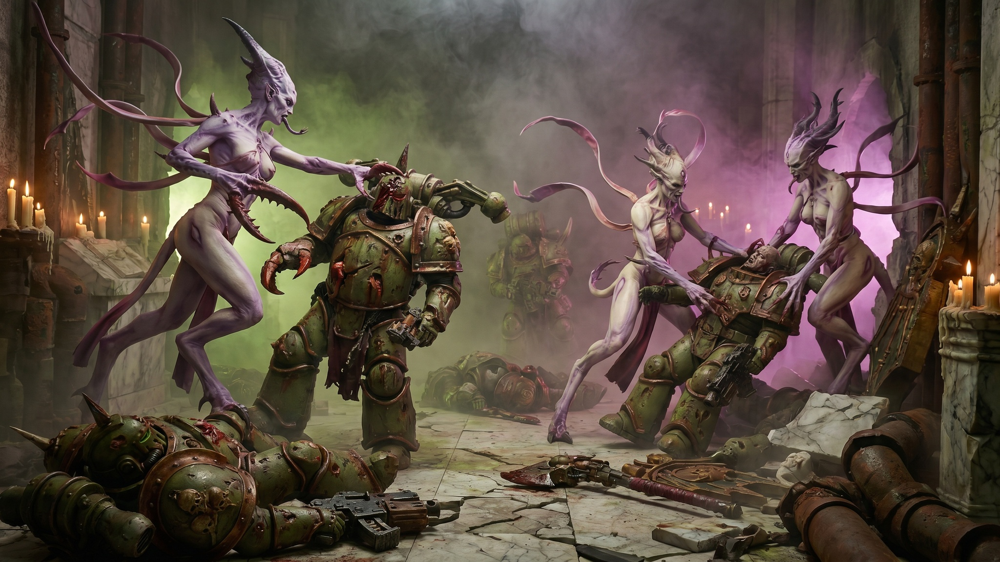
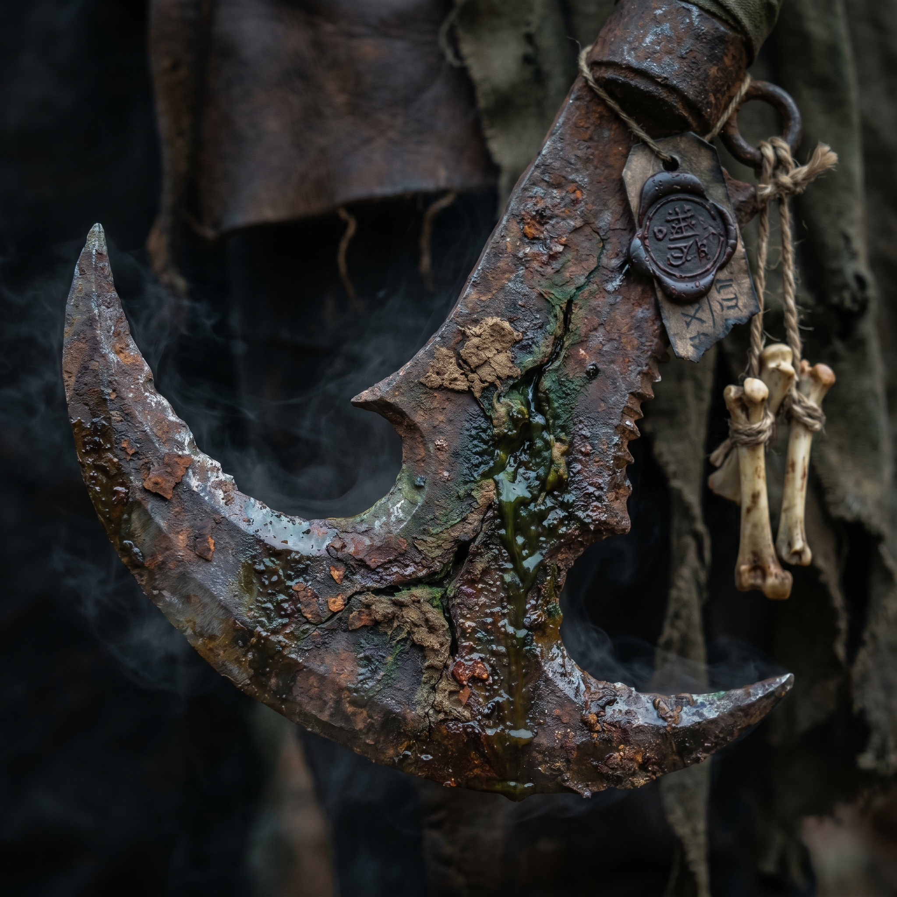

Rumor I
The Execution Tool
One chain-tag claims the sickle began as a prison-yard hook used to drag oath-breakers from the crowd. Mortivus did not forge its cruelty. He gave it theology.
CHAMBER LOCKS: engaged... censers active... chain tension detected... blade presence confirmed...

The blade does not end resistance. It teaches resistance what it was worth.
The Mercy-Sickle is not recorded as a common weapon. It is catalogued as a behavioral relic: a hooked plague-sickle used by Mortivus Classarion to pull commanders from formation, peel meaning from oath-holders, and grant the condemned one final recognition before the end closes around them.
Its name is not compassionate. Its name is a doctrine. Mercy, in this chamber, means the removal of illusion before death. It means the victim understands the exact shape of defeat before the blade makes that understanding permanent.
Select a marked part of the Mercy-Sickle. The chamber can render each component in surgical language or liturgical language. Neither mode is complete. The weapon was not made to be understood cleanly.

The hook is not decorative. It is the Mercy-Sickle’s central grammar.
The inward hook catches armor lips, exposed joints, ceremonial chains, weapon straps, prayer cords, and the small places where a warrior believes themselves still arranged. Mortivus uses it to remove the target from position before removing them from life.
Chamber stable. Edge pattern has not yet noticed prolonged attention.
The Septicarium does not resolve every contradiction. Some relics become more truthful when their origin remains multiple. The Mercy-Sickle has at least four preserved histories, and each one may be a symptom of the blade remembering itself differently.

One chain-tag claims the sickle began as a prison-yard hook used to drag oath-breakers from the crowd. Mortivus did not forge its cruelty. He gave it theology.
A sealed plate links the blade to Mortivus’ greatest wound. It claims the sickle was remade after retreat taught him that survival without meaning is only delayed humiliation.
Another record says the blade was recovered from a shrine where supplicants prayed not to die, but to understand why they had been selected.
A forbidden tag insists the sickle was never forged. It grew around a hook, like infection growing around a thought that refused to stop being useful.
Mortivus does not swing the Mercy-Sickle like a berserker. He uses it like a final argument. The weapon appears when resistance has already been spiritually softened, when a commander realizes orders no longer mean what they meant, or when an elite enemy must be taught the difference between endurance and meaning.
The blade is rarely the first weapon seen in a battle. Mortivus does not waste it on disorder that has not yet learned what it is. The Mercy-Sickle appears after the field has been prepared by attrition, dread, silence, failed prayer, and the long awareness that help is not arriving.
Against commanders, he uses the hook to remove the person holding the formation’s story together. Against priests and oath-holders, he cuts late enough that followers must watch and early enough that despair can finish what the wound begins. Against elite survivors, he does not always crush them immediately. He lets them recognize that persistence alone is not victory.
The weapon’s genius is interruption. It interrupts charge, prayer, command, seduction, heroic posture, and the small inner lie that says the victim is still choosing the terms of the end.
“The edge concludes. The hook persuades.”

The Mercy-Sickle is catalogued under physical, psychological, and spiritual injury. The categories are useful for scribes, but inaccurate for victims. Contact with the blade often causes all three effects to arrive as one event.

The hooked edge specializes in opening protected places. Armor plates split at seams. Straps shear. Rib cavities and joint locks become access points. The wound often looks less like a slash and more like something important has been pulled out of alignment.
Survivors rarely agree on the cut itself. They agree on the pause before it. Each fragment below records a different enemy of Mortivus describing the weapon as if it had arrived before his hand moved.

“I thought he missed. That is what I remember most. The hook passed close enough that I heard metal breathe, but nothing opened yet. Then I looked down and understood my armor had already decided to leave me.”
The Mercy-Sickle’s most useful record against daemonic excess is not a clean triumph. It is a costly engagement against a Slaaneshi champion whose speed, beauty, and cruelty broke standard Death Guard units before Mortivus entered the chamber. The wound he receives in this record matters. It proves the enemy was worthy of being refused.

Select each phase to progress the sealed fragment. Violet distortion marks daemonic excess. Green signal marks the blade’s refusal.
The first Plague Marines entered the shrine-corridor in ordered rot, bolters raised, armor coughing incense and chemical breath. They found the air already perfumed. The perfume did not soothe. It sharpened everything. Pain became a bell. Color became pressure. The cracked marble floor seemed to curve toward music no mortal throat had made.
Then the daemonettes came through the violet mist like knives remembering dance. They did not overpower the Death Guard by strength. They dismantled rhythm. One marine fired at a target that had already become laughter behind him. Another turned to answer a voice from a childhood that had never belonged to him. A third was opened along the collar seal so precisely that his armor kept standing after he fell inside it.
The final close study of the blade is not recommended for long viewing. The inner edge does not appear sharp in the conventional sense. It appears patient.

The edge contains rust, pitting, votive residue, and dried matter caught inside its micro-fractures. None of these details explain its behavior. They only prove the weapon has been used enough times for matter to begin treating it like an archive.
The Reliquary does not claim the Mercy-Sickle thinks. That would be imprecise. The chamber claims only that the weapon behaves differently around refusal, oath, beauty, command, and prayer. It becomes most active when the target believes their meaning has not yet been defeated.
Mortivus does not call this hatred. He calls it instruction. The Septicarium does not correct him.
“Mercy is not the absence of pain. Mercy is the removal of falsehood before pain becomes final.”
The Septicarium preserves the Mercy-Sickle not because the blade is rare, but because its behavior clarifies Mortivus Classarion more precisely than any title.
The mounted weapon remains the page’s primary subject: not a prop, but an altar-object that organizes every record around itself.
The Perfumed Refusal proves the blade is not only useful against mortal courage, but against daemonic excess and impossible grace.
Survivor fragments preserve the recurring symptom: all remember the pause before the wound.
The close study is archived under warning. The edge is not merely sharp. It is patient around false certainty.